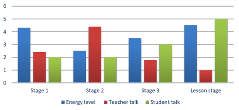
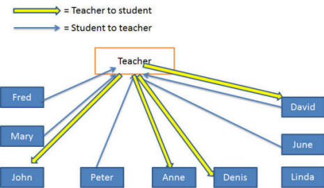

Observing and assessing teaching
Here's what an anonymous institution says about this:
In [institution name] observations by your
line manager are supportive and constructive and are not part of an
assessment process.
The results of any observations will, however, be kept on file.
Nobody will be fooled by that for a second.
All observations in institutions undertaken by people in senior
positions will contain an element of assessment. It cannot be
otherwise in the real world.
The trick, if there is one, is to separate support from assessment
while maintaining honesty and transparency.
 |
Know your limitations |
It may be the case that you are an experienced and qualified
teacher trainer used to working on in-service (not initial) training
courses. In that case, you probably don't need this guide but
you may find it interesting to compare prejudices.
Most Academic Managers around the world do not fall into
this category so need to tread carefully.
Assessing teaching is a complex and difficult area and not centrally the topic
of this guide (although it will be considered).
Advising and supporting teachers is far less so.
If you are not and never have been a teacher trainer by trade, you
may like to take the course on this site intended to convert master
teachers into good teacher trainers.
You can start the guide by accessing it from the teacher training
index linked on the left.
 |
Tailor-make observations |
People are different, have different levels of experience and
expertise and different expectations. We need to tailor the
types of observations we conduct to take account of these
differences.
Crudely, we can
reduce the types of teachers that most schools employ to three
sorts. Obviously, this is pigeon-holing people and there is a
cline from one end of the spectrum to the other.

These are usually teachers who have recently completed an
initial training course such as the Cambridge CELTA or the
Trinity Certificate in TESOL. They come to you armed with
their new certificates and probably quite a lot of enthusiasm
and not a little nervousness. Observation for these people is guidance
but there will be a large element of assessment. This sort
of teacher expects that because they are new to you and the
institution.
- you need to be something of a generalist because neither you nor they know now what they are best at and where they need advice.
- you need to look at their classroom tactics and gently suggest alternatives to any they are using which you think could either be done better another way or are inappropriate to your setting.
- you need particularly to look for things like thoroughness in practice and presentation because typically teachers like this burn through materials too quickly and don't properly exploit what they have.
- you need to limit your ambitions. Most teachers at is level can take on board and act on a maximum of three ideas and bits of advice per observation. Do not give them long lists because that will de-focus, confuse and depress them.
- you need, in feedback, to be absolutely clear and not hedge with too many comments on what could have been done. If you mean A better way to do this is ... or, This is what you should have done, then say so.
- teachers like this, if you are employing the right ones, welcome positive, constructive feedback and are confused by the presentation of alternatives.
- you need to consider carefully what they are capable of doing. You may be able to carry out complex and sophisticated classroom procedures using multiple media inputs but, before you suggest they do so, ask yourself whether they have the experience and aplomb to carry it off successfully.

These are usually teachers with a few years' experience who are
still learning but can do most things in the classroom
efficiently and automatically. They don't need, for
example, to think about how to elicit, how to drill and how to
set up activities. There will be little by way of
assessment of these teachers because, presumably, they have
worked with you for some time and have not been found wanting.
They need focus and some advice concerning what they need to
learn before they go on to further training at diploma level or
above.
- before any observation, discuss with them where they feel their weaknesses are in the classroom and then set up an observation that focuses on what they need to improve. Most teachers in this category can identify a range of issues. If they can't, nudge them.
- don't be tempted, in feedback, to take on the assessment role. Focus on the data you have gathered and discuss them together, seeking a way forward to improvement.
- set up another observation focused on the same area to note any changes in behaviour. This way, your observations become part of a development programme.
- see below for some focusing ideas.
These teachers have probably been working with you for some time
and have worked in a range of other settings. They may be
diploma-level qualified and are serene and comfortable in what
they do. Because of this, they may resent any hint of
assessment or advice giving by you. People vary and some
will be very open to both, of course. In that case, you
can proceed as for the previous group and focus your observation
on something the teacher wants to find out and needs an
observer, who is not otherwise employed in the classroom, to be
a data gatherer. If not:
- look for excellence. Many teachers in this category have become specialists at some forms of classroom behaviour. It may be anything from crisp instruction giving to the use of poetry. Whatever it is, try to identify it and use this expertise in the rest of your in-house development programme.
- be alert for negative habits that the teacher may be unaware of. After a few years of doing something that seems to 'work' (however that nebulous concept is defined), some classroom habits can become ingrained. Look for these and mention them, interspersed with positive comments in your feedback. Secretly, the teacher may well be grateful that you have pointed out that they consistently overpraise, talk facing the board or use OK, um as a filler.
- feedback will be much more even in this case. The teacher will know where the high and low points of the lesson were so you are in listening mode. You want the teacher to reflect.
- find your point(s) of excellence and ask whether the teacher may be prepared to lead a short workshop for the whole teaching team on the subject. Even if the idea is rejected, the teacher will be covertly pleased that you asked.
Depending on the make-up of your team, you may need to refine
this rather crude categorisation. That's part of the job.
You may also need to match the observation type you employ to the
characteristics of the teacher and your, or your institution's,
purposes for the observation programme. Read on.
 |
Types of observation: which hat am I wearing? |
You may like to select one or a combination of more than one type
of observation from this list. This is not an exhaustive list
and researchers and writers routinely invent new categories.
Which format is selected depends to a large extent on three factors:
- The needs and characteristics of the individual teacher
- The experience and wishes of the observer
- The requirements of the institution
There are four sorts here but there are many variations on the
basic themes.
An effort has been made here to match the
observation types with the three categories of teacher discussed
above (see the bits in bold).
- Directive Observation

This is the most familiar type of observation to anyone who has done a training course.- The observer is non-participative throughout.
- Time should be made for some kind of pre-lesson discussion of the aims and objectives of the lesson.
- Feedback is usually in the form of a written report plus a conversation based on a standard set of categories known to the observee in advance.
- A lesson plan is usually required, if only in outline.
- The observer's role is to evaluate, assess and recommend action.
- Advantages:
- The format is familiar.
- There is a clear division of responsibility.
- Feedback is relatively straightforward.
- It is a format well suited to observing inexperienced or new teachers.
- Disadvantages:
- Definitions of 'good practice' are imperfectly clear.
- The observee is discouraged from innovation and experimentation.
- Alternative Observation
This sort of observations seeks to extend the teacher's repertoire of approaches and techniques.- The observer is non-participative throughout. His/her role is to note down what happened at the various stages of the lesson and suggest other possible techniques or procedures which might have been adopted to achieve the same end.
- The purpose is often to evaluate the success of relatively untried procedures. It is also appropriate for people teaching at unfamiliar levels or to unfamiliar ends.
- The observer is also trying to note 'golden' and 'leaden' moments in the lesson so that the reasons they occurred can be discussed.
- Advantages:
- Pressure is lower on the observer because he/she is not making value judgements and on the observee because it doesn't matter if things go wrong.
- It is a format well suited to teachers with experience but who may have a limited range of techniques to draw on.
- Disadvantages:
- Aims are slightly less clear.
- Provision of alternatives may be seen as implicit criticism.
- There is no assessment of technique and no direction is given.
- Collaborative Observation

Working together to look for improvement is motivating and engaging.- The observer and the observee plan the lesson together and conduct it either as a team or in the normal way with teacher and observer.
- The purpose is usually to ensure that the aims are clearly defined beforehand so judgements are based on what was actually attempted, rather than on what was apparent. Both the planning of the lesson and the judgements which are made are joint.
- Advantages:
- The lesson is not the work of one individual being assessed by another. Possible problems are known about beforehand and can be focused on directly during the lesson.
- It is a format well suited to peer observation when one of the partners is more experienced than the other. It is a good choice for exploiting the experience and expertise of long-serving teachers.
- Is unusual and motivating.
- Disadvantages:
- Roles are less clear.
- The criteria for 'success' are unclear.
- The process of planning, teaching and follow-up discussion can be time consuming.
- Non-directive Observation

This is for people who want some facts about their teaching and can live without too much judgement and opinion.- The observer is non-participative throughout and simply records what went on.
- What is recorded is agreed beforehand. It may be patterns of interaction, student activity, teacher activity or any number of other factors (see below for more alternatives).
- The observee needs to be very explicit about what the observer should note.
- The purpose is to give the teacher a record of what happened rather than what he/she thought happened.
- Advantages:
- There is a clear division of responsibility.
- Feedback can be analysed in private.
- No judgements are made.
- It is possible to fine tune the system to concentrate on very specific areas.
- The observer can confine his/her attention to particular issues which have been identified in advance of the lesson.
- It is a format well suited to the observation of experienced teachers.
- Disadvantages:
- It can be a fairly bland affair with unclear outcomes.
 |
Best practice |
There is no profession-wide definition of best practice. There is, in fact, no academic consensus concerning how people learn languages and how best they should be taught them.
Novice (and not so novice) teachers continually seek out
novel and interesting ways to do things the wrong way simply because
there are more ways of doing something wrong than doing it right.
However, there is more than one way to be effective, even if what is
done runs counter to our own prejudices or preferred understanding
of good practice.
Teacher observers need, accordingly, to
leave any preconceptions at the classroom door and try to judge
whether what is happening is achieving its ends. For those inclined
to see things that way, this is what is meant by “first cast out the
beam out of thine own eye; and then shalt thou see clearly to cast
out the mote out of thy brother's eye” (Matthew 7, 5, King James
Version).
There should, therefore, be no presumption of a monopoly of knowledge concerning how things should rather than can be done. There is not a scrap of evidence to support quite a lot of received wisdom in the field and we should acknowledge that. This includes, for example, the efficacy of drilling, delayed correction, inductive learning and much else.
It is true that novice teachers need clear guidance rather than being told somewhat vaguely what they could (=should?) have done but that should not be at the expense of making assertions concerning the efficacy of one approach over another. Setting out advice and feedback in the form of imperatives – do this, do not do that – reinforces the air of omniscience. There are times when it is fully appropriate to tell novice teachers not to do something (e.g., give instructions vaguely and after the task has been distributed) but there are other times when advice needs to be far less dogmatically expressed.
The fly on the wall |
The main objective of what follows is to encourage you to be
more than a fly-on-the-wall observer but to be active
with an agenda to follow and a reason for being in a
colleague's classroom.
Observation for developmental purposes should not be a passive process
and both observer and observed should get something positive from the
experience.
Your observation programme is not just for you and the individual
teachers you observe. If you consistently focus on certain areas
in all observations, you can soon get an accurate idea of how well your
institution does things. Then you can focus the rest of your
development programme on the weaknesses.
If you cannot confidently answer the question
What are your institution's
teaching strengths and what are its teaching weaknesses?
then you need to be more focused in what you do.
Focusing |
Good observation tasks help you to get away from being a fly on the
wall and focus on the relevant behaviours that are the targets of the
process.
There is little point, for example, in giving lots of feedback on how
the teacher gave instructions if she was interested more in how she
dealt with language that emerged spontaneously from the learners.
 |
Charts |
There are lots of ways to use charts when observing teaching.
Charts allow a quick way to record data, can be very informative and can
later be used to compare the different ways different teachers deal with things like
apportioning time, gaining and maintaining attention and groupings. For example:
If you want to measure the amount of teacher vs. learner talk and map it
against your estimation of energy levels in the classroom, you could use
something like this:
Start with a blank chart and three coloured
pens to play with while the lesson progresses. You can also use a set of blank circles and make pie charts if that's
easier. Clearly, you can vary the parameters to suit what the
teacher wants
to be the focus.

Then, in feedback, you and the teacher can compare what they perceived to be happening with what you recorded and spot the differences.
A reasonably simple alternative type of chart is something like this which is intended to focus on error correction and instruction checking but could be used for all sorts of other purposes such as concept checking, nomination of learners and so on. You place a bar on the line where you believe it should go and then, later, discuss the findings with your teacher.

For time apportioning, an effective chart type is the pie chart which may look something like this:

Again, a comparison with the teacher's planned timing can be informative especially if you find wide variations.
Interaction patterns are also candidates for graphical representation. For example:

This sort of chart quickly shows how equitably attention is shared and who are the most forthcoming learners etc. It will soon become messy if you try it for the whole lesson so is best reserved for plenary sections of the lesson or for short snatches only.
 |
Using forms |
Charts and so on are mostly for information. Their use is a
data-gathering process not assessment of any kind.
At other times, you will be in some kind of assessment mode
because that, too, is part of an Academic Manager's job.
A generalised, institution-wide form is often what is used and
the categories will probably be drawn from a teacher
training programme. Whatever you use, it should be open and
transparent. There should be no hint that the form the teacher
sees is different from what you actually use.
If your institution doesn't have a standard form, make one.
Here's an example of the categories that might be used.
| The usual data go here: name, date, class level, lesson focus etc. | |
| Planning | Comments |
| appropriate aims
and outcomes ordering activities materials activities and resources balance and variety opportunities for communication |
|
| Management | |
| use of 1st
languages and behaviour instructions establishing good rapport monitoring tasks providing / getting feedback using equipment and managing the space |
|
| Language Work | |
| teacher’s
language use giving models of language handling errors contextualising language focus on meaning, form and phonology providing appropriate practice checking understanding |
|
| Learning | |
| awareness of the
needs and interests of the group helping learners to develop skills maintaining an appropriate learning pace maintaining interest and enthusiasm achieving the lesson’s aims |
|
| Overall comments | |
This is a one-size-fits-all approach which may be useful in large
organisations where individual teachers are not well known to the
Academic Manager(s). In smaller organisations, something more
focused can be used.
Here are some examples. The focus will reflect your and your
institution's current concerns:
Factors affecting learning
| Positive | Negative | |
| The environment | ||
| The teacher's roles | ||
| The task types | ||
| Grouping | ||
| Feedback form |
Lesson shape
In the columns
- note what the learners were doing (e.g., working in pairs to solve a problem, making lists individually, listening and taking notes etc.)
- note what the teacher was doing (e.g., presenting new data, monitoring, sitting out etc.)
- note what sort of activity this was (e.g., skill getting,
awareness raising, skill using, testing, consolidating, free
practice etc.)
For more, see the guide to task and activity types.
| Time | Student activity | Teacher role | Activity type and aim |
| Minutes 0 - 10 | |||
| Minutes 11 - 20 | |||
| Minutes 21 - 30 | |||
| Minutes 31 - 40 | |||
| Minutes 41 - 50 | |||
| Minutes 51 - 60 |
Instructional language
| Activity | Framed? | Clear? | Concise? | Checked? | Demonstrated? | Repeated? |
Questioning
| Question type: | Question concerned ... | Learner response was ... | Aim was ... |
| Closed | |||
| Open | |||
| Display | |||
| Communicative | |||
| Procedural |
For an explanation of these types of questions, see the guide to asking good questions.
Exploiting learner output
| Learner output: | Concerned | Relevance | Teacher response ... | Effect ... |
| Planned | ||||
| Spontaneous |
Dealing with error
| Error type | Error was ... | Corrected? | Peer correction? | Self-correction? | Teacher correction? | Outcome? |
| Referential | ||||||
| Syntactical | ||||||
| Phonological | ||||||
| Stylistic | ||||||
| Interpretive |
 |
Peer observationsAs others see us ... |
The ideas outlined here for observing other people doing their jobs
can be reversed.
Instead of you using the forms, charts and other techniques, you can
provide these to your teaching team (and work together to come up with
alternatives) which can form the basis for peer observations.
That may involve your being observed and judged, of course, but that's
character building.
Observer behaviour |
Some institutions have a policy of so-called drop-in observations.
The view taken here is that these are useful as a way of observing the
class, useless as a way of observing the teacher.
Unannounced, drop-in observations
- are generally resented by the more experienced, because they feel it is unfair not to have been allowed to prepare something exciting
- are a source of feelings of panic and inadequacy for the less experienced, because they are seen as spot checks on their competence
They should only be used to get a general feel for a group's strengths and weaknesses for the purposes of class placement. As assessment or teacher evaluation tools, they are worse than useless.
Even in properly set up observations, you (and peer observers) need
to adhere to an agreed, institution-wide policy.
Here is a suggestion:
Please remember that you are a guest in someone else's classroom. This means being as unobtrusive as possible:
- do not distract the learners
- if possible sit behind the learners, out of eye contact
- arrive when you say you will and don't overstay your welcome
 |
Feedback |
This will be both oral and written, naturally.
We considered the three main categories of teacher above and how the
feedback meeting is handled will depend a good deal on the teacher's
background and the type of observation that was done. In general terms, the more experienced the teacher
is, the less formal and agenda-driven the meeting will be. This
also makes a meeting with an experienced and well-known member of
the team much less predictable so what follows applies mostly to
giving feedback to new and/or inexperienced teachers.
 |
Oral feedback |
- Formality
This is a semi-formal occasion so make sure you sit facing the teacher wherever the meeting takes place. - Agenda
We all have our own way of doing this but here’s a suggested way to proceed:- Thank the teacher for coming and, if they are giving up part of their time (i.e., they are on a break or it’s after teaching hours), make very sure the teacher knows you know this and appreciate it.
- Ask for the teacher’s view of the good and less good
areas of the lesson. Nudge them into identifying the
stages, if they can’t think of much and then lead them
through the sections of the lesson. Let them do the
talking. It’s not your turn yet. Probe a little
here to encourage self-appraisal (it’s a key teaching skill)
with questions like
Why do you say that?
How much did it matter?
and so on. - Now it’s your turn.
- Start with the positives (there are always some) but avoid the use of ‘nice’, ‘lovely’ etc. because these are meaningless terms. Prefer words like ‘helpful’, ‘engaging’, ‘motivating’ etc. because those are what you probably mean
- Now focus on your three main points – the ones you want them to work on – explaining why they are important and what they should (not could) have done. Make this very constructive and allow them any number of Yes, but … interruptions.
- Sum up the three issues and make sure the teacher can do the same – you are concept checking, in fact.
- Broaden things out. Ask about the teacher’s other class(es), the students giving them trouble or being otherwise interesting etc. Get them to say if anything is concerning them. Are you getting enough support? Are you generally happy with the materials / classrooms? Is there anything you need? etc. Make it clear their views are valued but don’t make promises you can’t keep and stick to academic matters.
- Draw the meeting to a close by shutting your laptop / putting away papers etc. Make it clear that written feedback will follow (if you don’t have it right now). Thank them again for their tolerance and time.
 |
Written feedback |
This should be properly presented, word processed and free from
typos and other errors. It is probably a document the
teacher will retain for a considerable time. They may even
show it to future employers.
We all write differently so these are just general points to
consider.
- Avoid note form and obscurity. Don’t over hedge with
I think you could have ….
It seemed to me that …
etc.
but state things clearly, objectively and unambiguously. - Avoid questions which can have no answer in a written text such as
Have you considered …? - State that the teacher is free to ask you any questions if anything you have written is unclear.
- Put it in an envelope with the teacher’s name on it and make sure they get it directly from you.
- Keep a copy for your records and, if required, for the institution's records. The document given to the teacher, the one you keep and the one that goes to the institution's records should be identical.
- Make sure the teacher knows what happens to any records and who gets to see what.
Here are some examples of what to write and what not to write:
| Merely critical and unhelpful | Constructive and usable |
| You need to keep a lid on the amount of first language use that is going on | There’s too much use of first language, isn’t there?
This is making your job more difficult so try, for
example:
|
| Consider how you set up pair and group work more carefully because some people didn’t know what they should be doing. | The first pair-work activity didn't
work too well, did it? When you set up a pair- or group-work activity do four things:
|
| Make your feedback suit the task – the first activity needed more feedback in detail. | Think about the type of task you
are using: Is the product or the process important? If the product is important (like your task ZZ), do thorough feedback so you know if it’s safe to move on If the process is more important (like your task XX), then monitor it so you can pick up on a few interesting ideas, thank people so that it’s valued and move on. |
| At the end of the first pair-work task, you could have taken a little more feedback. | At the end of the first pair-work
task, you needed to take more feedback because:
|
None of this is rocket science. All that is needed is some care to make sure your comments are not obscure and are usable.